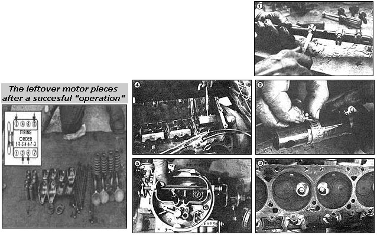

Back in the early '70s most Americans drove large, two-ton cars with muscular V8 engines lodged under their hoods. However, over the last 10 years, attitudes - as well as economic necessities - have changed. Today's outrageous gasoline cost and limited fuel availability have made such "solid" sedans look like real dinosaurs.
Yet many folks still own the overpowered runabouts. The unfortunate old tanks just flat refuse to die, and they're next to-impossible to sell for a reasonable price. But if you're one of tie people who've suddenly found themselves with too much car ... take heart! Before you put the Detroit workhorse out to pasture, consider trying Joe Lawyer's V8 to V4 conversion.
As crazy as it may sound, you can actually achieve a 10% improvement in gasoline mileage by putting four of the eight-bagger's cylinders to sleep ... and without any lose of engine reliability. The job is not difficult to perform, either. If you have moderate shade-tree mechanical skills - say, enough to complete a valve-job on that V8 - you can do all the necessary wrenching by using the instructions that follow. And - best of all - the conversion is inexpensive. All you'll need is a top-end gasket set, a couple of feet of 1/8" x 1" x 1" angle aluminum, a 1-1/4" rubber expansion (or freeze) plug, four 3/8" x 3" fine-thread bolts with nuts and washers, some brass shim stock, and eight 1" aviation-type hose clamps.
I paid a visit to Jim Clark's Chrysler/Plymouth dealership in Topeka, Kan., to look over mechanic Joe Lawyer's shoulder while he converted a 400-cubic inch, eight-cylinder guzzler into a 200-cubic-inch, four-cylinder sipper. Joe has done about 10 of these changeovers since 1973 and can claim a 100% reliability record for the altered eights. In fact, some improvement in engine longevity can be expected ... since - when one set of four cylinders starts to "feel tired" - the other quartet of "snoozing" holes can be put back into action.
The ex-Army maintenance mechanic experimented with several different conversion schemes before he settled on the one I witnessed. Joe even tried removing the pistons from the car's four deactivated bores, but found that the balance of the engine was too radically altered by that process. Besides, the ace "wrench" theorizes that there may be some power-producing combustion in the "dead" cylinders ... caused by the induction and ignition of incompletely burned fumes from the exhaust manifold.
Essentially, Joe's transformation involves de-energizing every other power pulse in the V8's firing order ... by "immobilizing" the valve train for cylinders two, three five and eight. Of course, the inlet valves had to stay put to prevent air from being pumped into the intake manifold by the rising pistons. And - in order to maintain pressure in the valve lifter oil gallery - the hydraulic lifters were raised out of the cam shaft's reach and locked in position. (The spark plugs and wires serving the inactive cylinders were also retained ... they produce a "waste" arc which ignites any lingering vapors, helps to clean up emissions, and keeps the electronic ignition from overheating.)
The modification procedure was straightforward, and Joe easily undercut the standard 11 hours of flat-rate time allotted for a valve job ... a task which is very similar to the changeover. Then Joe and I went out for a spin. Though the V4 was a bit sluggish while accelerating to 20 mph, performance from that point and up to cruising speed was surprisingly good. (The mechanic loves to talk about the calculator-punching engineers who've computed that the four-cylinder powerplant shouldn't even be able to push the car's weight.) And I was amazed to find that the "new" V4 ran as smoothly as did the "full" V8 engine.
But the real fruit of Joe's labor turns up as gas mileage. The reincarnated Plymouth garnered nearly 21 mpg - a big eight-mpg improvement, I was impressed enough to learn the steps necessary to transform a Mopar V8 (a Chrysler, Dodge, or Plymouth product with a 383-, 400- or 440 cubic-inch motor and two-barrel-carburetor) from Superman back into a mild-mannered reporter.
Start by stripping the motor as you would for a valve job. This task involves draining the coolant, loosening the exhaust system ... and removing the exhaust manifold, valve covers, rocker shaft assemblies (mark them "left" and "right" ), push rods, cylinder heads, intake manifold (including the carburetor), and valve lifters from cylinders two, three, five and eight. Clean all the parts and set the rocker shaft assemblies, the cylinder heads, and the intake manifold/carburetor unit on your workbench.
Then, find the left rocker assembly, and remove its rocker arms. Wrap the four oiling holes that serve the center two cylinders' rocker arms (cylinders three and five) with brass shim stock, and secure these makeshift seals with 1" hose clamps, as shown in Photo 1 (see the Image Gallery). Now replace the four outer rocker arms which serve cylinders one and seven. Then set the modified rocker assembly aside and locate the right shaft. Remove only the outer four rockers from the right assembly, and seal the oiling holes as you did those on the left side (see Photo 2). This procedure effectively disconnects the valves from the camshaft on cylinders two, three, five and eight.
Next - because you do not want compression to build up in the deactivated cylinders - remove the exhaust valves from the heads of the "dead" bores. In addition, to prevent air from being driven up through the valve guides and into the valve covers, block the guides with 3/8" x 3" National Fine bolts, washers, and nuts ... as shown in Photo 3. Torque the nuts to about 45 foot-pounds ... to ensure that they'll stay put and won't leak. And, again, leave those intake valves shut to keep any air from being pushed up toward the carburetor.
Unfortunately, you cannot just remove the valve lifters from the nonfunctional cylinders ... since the units ride in a pressurized oil gallery. And you can't leave the lifters in there, either, because the camshaft will knock them out. So, you'll have to fabricate "hydro-holders" for each of four sets of two lifters. A 4"-long piece of 1/8" x 1" x 1" angle aluminum - notched to fit the grooves in the lifters - will do the job. Drill and tap the block as shown in Photo 4, and bolt the "lifter locks" in position. This procedure will allow you to maintain oil pressure, while averting any undesirable moving part collisions.
The last conversion step consists of blocking the right throat of the two-barrel carburetor, as shown in Photo 5. After removing the gas mixer from the intake manifold, unscrew the throttle butterfly valve and block the venturi with a 1-1/4" expansion (or freeze) plug. Then obstruct the outlets for the spray bar and the accelerator pump with wire or a silicone sealant ... to prevent the "idle" throat from filling with gas.
You'll also need to plug the vacuum advance hole in the "retired" venturi ... in order to maintain the proper spark advance. (For an even more efficient setup, buy or make an adapter plate and use a single barrel carburetor ... such as the one which can be found on Chrysler slant-six engines.)
Now it's time to bolt your Mopar four-lunger together. Just reverse the disassembly procedure used for a valve job, fire 'er up, and tune in the fuel mixture. (Some adjustment will be necessary ... because of the increased load on that one throat.) In addition, Joe recommends advancing the timing two degrees ... unless you're a hot rodder. (For throttle-happy pilots, this change might cause detonation.) Even with the timing advance, the V4's emissions fall well within EPA limitations.
Your former V8 "clunker" should now exceed 20 mpg under reasonable use. True, you're not going to have much success playing jack rabbit with the youngsters on Main Street. But you will be surprised by how well those four lonely pistons push your heavy car down the highway. Joe claimed that reaching 90 mph would be no problem, but - at such excessive speeds - gas mileage might drop below that of the eight-cylinder engine. So, keep your new "economy car" down to 55 mph ... and reap the profits.
|
 PHOTO BY THE AUTHOR |
|
|